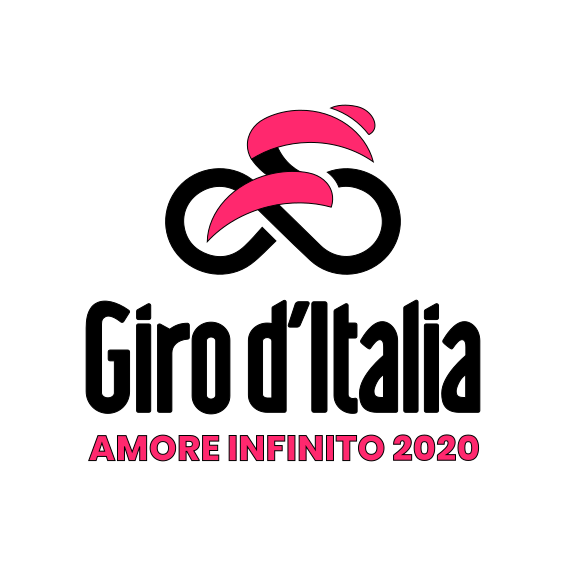
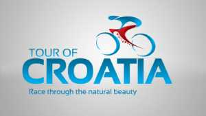

Road Cycling meka
...the list of 3 biggest cycling tours + the most sexy one :-)
@ First is across Italy

Along with the Tour de France and Vuelta a España, the Giro is one of cycling's prestigious three-week-long Grand Tours. The Giro is usually held during May, sometimes continuing into early June.
Read more...
$ Wimbeldon on wheels
The Tour de France is an annual men's multiple stage bicycle race primarily held in France, while also occasionally passing through nearby countries. Like the other Grand Tours (the Giro d'Italia and the Vuelta a España), it consists of 21 day-long stages over the course of 23 days. It has been described as "the world’s most prestigious and most difficult bicycle race."
Read more...
# La Roja

Along with the Tour de France and Giro d'Italia, the Vuelta makes up cycling's prestigious, three-week-long Grand Tours.[4] While the route changes each year, the format of the race stays the same with the appearance of at least two time trials, the passage through the mountain chain of the Pyrenees, and the finish in the Spanish capital Madrid. The modern editions of the Vuelta a España consist of 21 day-long stages over a 23-day period that includes 2 rest days.
Read more...
& Small but sexy

The Tour of Croatia is a men's cycling stage race that takes place in Croatia. It is part of the UCI Europe Tour and is rated by the UCI as a 2.HC event, the second tier of professional stage races. The race takes place in April in the build-up to the Giro d'Italia. The event between 2015-2018 was organised by Vladimir Miholjević, a former professional cyclist. In 2019, the race was held in October, in the week after the world championships.
Read more...